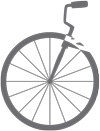

Be healthy
I have a hard time getting myself to simply start exercising or eating right. I've found that this series of motivators really helps.
-  Lifestyle
The first things to remember is that you're not starting a diet or a one-time exercise plan to lose weight or get fit for a week. You're beginning a lifestyle of healthy living. If that's too much for you, though, try it for a month and see how you feel. You may just want to revisit this tip.
 Goals
GoalsLike I said, it's a lifestyle, which is a rather large commitment. The best way for me to really keep with it is to write down why I'm doing it. Then, when I'm frustrated and want to give up, I can go back to my list of goals and get excited all over again.
Assignment number one: write down some goals of your own. Ask yourself why you want to be healthy. Is it to feel better about yourself? Gain confidence? You decide!
 Buddy System
Buddy SystemWorking out was especially hard for me until I found a friend to work out with. I know it's not always practical, as everyone has different schedules, but finding someone who also wants to become healthy can help you remain accountable. Plus, you can trade notes and see how you're both dealing with different issues.
- Network
Much the same as the Buddy System, except this includes more people, making you even more accountable. Networking is all about finding which of your friends are trying to get healthy as well, and creating new friends who are doing the same thing. This is helpful because if your go-to exercising buddy is busy one week, you have plenty of other people you know work out and would love to have you tag along!